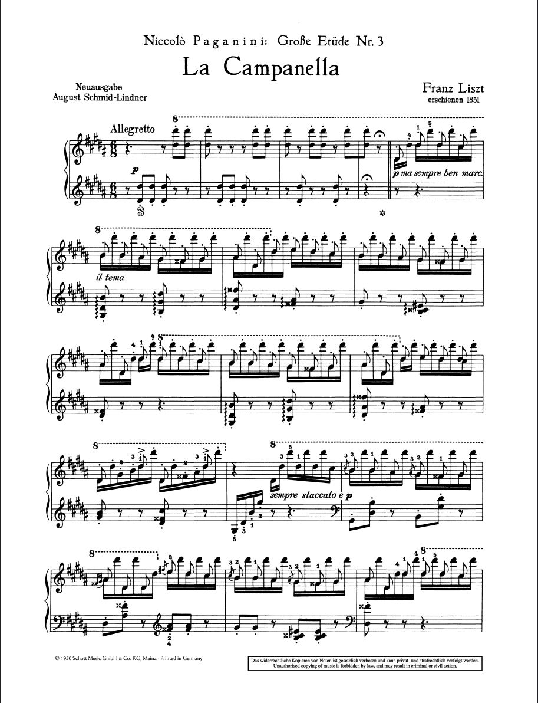
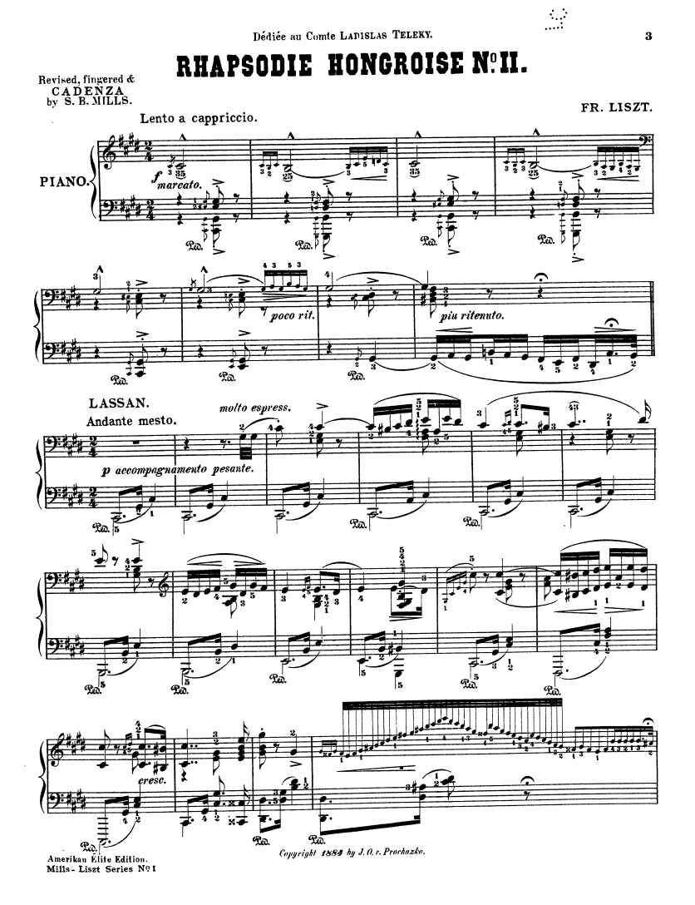
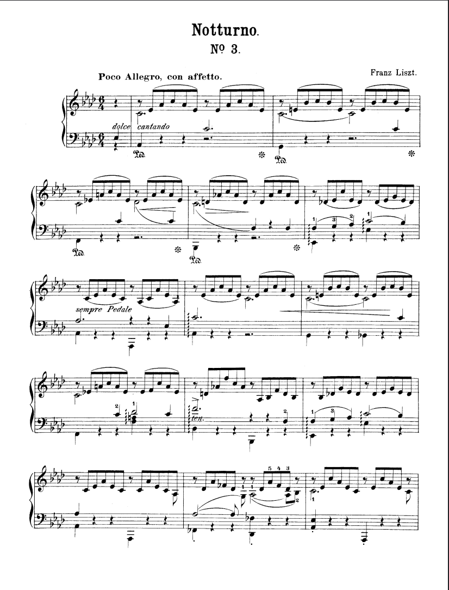

Popular pieces



(Liebestraum, etc)
Life and achievements
Franz Liszt (1811–1886) was a Hungarian composer, pianist, conductor, and teacher who became one of the central figures of the Romantic era. Born in the village of Doborján in the Kingdom of Hungary, he showed extraordinary musical ability as a child and studied in Vienna before moving to Paris. By his teenage years, he was already performing across Europe. In the 1830s and 1840s, Liszt became the most celebrated pianist of his generation, undertaking extensive concert tours throughout Europe. His performances were revolutionary: he performed entire recitals alone, played from memory, and pushed the technical and expressive possibilities of the piano to an unprecedented level. His enormous popularity helped create the image of the modern piano virtuoso and contributed to what became known as "Lisztomania."


Liszt was equally important as a composer and innovator. He transformed piano writing through works such as the Transcendental Études, Hungarian Rhapsodies, Années de pèlerinage, and the Paganini Études. Pieces such as La Campanella demonstrate his use of extreme leaps, rapid repeated notes, and demanding octave and finger techniques. He also pioneered the symphonic poem, a single-movement orchestral work based on a literary, visual, or philosophical idea, with works such as Les Préludes and Mazeppa. His approach to harmony was remarkably forward-looking: he experimented with chromaticism, unusual modulations, augmented and diminished harmonies, and structures that anticipated developments in late-Romantic and even 20th-century music. He was also one of the first major composers to make extensive use of thematic transformation, developing different sections of a composition from a single musical idea.
Liszt was equally important as a composer and innovator. He transformed piano writing through works such as the Transcendental Études, Hungarian Rhapsodies, Années de pèlerinage, and the Paganini Études. Pieces such as La Campanella demonstrate his use of extreme leaps, rapid repeated notes, and demanding octave and finger techniques. He also pioneered the symphonic poem, a single-movement orchestral work based on a literary, visual, or philosophical idea, with works such as Les Préludes and Mazeppa. His approach to harmony was remarkably forward-looking: he experimented with chromaticism, unusual modulations, augmented and diminished harmonies, and structures that anticipated developments in late-Romantic and even 20th-century music. He was also one of the first major composers to make extensive use of thematic transformation, developing different sections of a composition from a single musical idea.